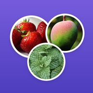

Trafik-Karten
Zwei Karten für das iPad an der Theke.

AromakarteShisha-Tabak, E-Zigaretten, Liquids & Aromen
Humidor-KatalogZigarren mit Stärke, Aroma und Preis
Als App installieren: Karte in Safari öffnen, auf Teilen tippen und „Zum Home-Bildschirm“ wählen.